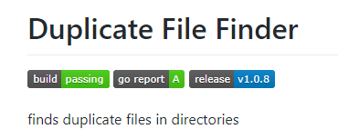

중복파일을 검색해서, 그 결과를 리턴해주는 코드를 Go 로 몇 줄 작성해서 Github repo 에 올려봤다. 처음에는 빌드 정도만 되도록 작성된 코드를 올렸다. 그런데, 다른 github 사용자들의 README.md 파일을 보니, 사용법도 잘 정리되어 있고, 훈장 같은 벳지들도 달려있지 않은가!! 그래서 나도 README.md 파일도 좀 고쳐보고, 벳지도 몇 개 달아봤다.

https://github.com/devplayg/dff
기능만 간단히 개발해서 업로드 하면 만족할 줄 알았는데, 그게 아니다. 할게 많다.
- README.md 파일 작성 및 사용법 명시
- 라이선스 정의 및 LICENSE 파일 작성
- Refactoring 된 코드
- 코드 주석 (이것이 바로 godoc와 연결되어 API 문서가 된다.)
- Travis 와 연계한 자동 빌드 기능(.travis.yml)
- 등등..
앞으로 업로드할 Repo 형식의 표준으로 계속 발전시켜 볼 생각이다.